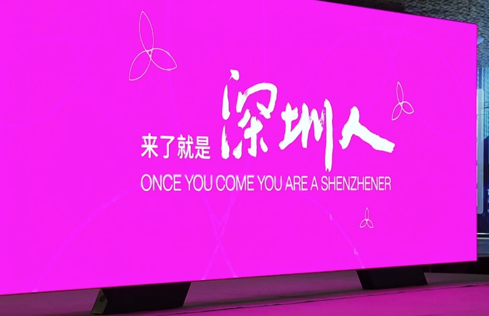

01 / 价值判断 · INCLUSIVE CITY
深圳是一座包容的城市
留住每一代年轻人，是深圳创新之城立足之本。
无论是一座城市还是一个街区，创新主体的多样化是创新生态可持续生长的关键。
40年
从渔村到全球科技城
1750万
常住人口，以年轻人为主体
35岁
全市平均年龄

02 / 价值判断 · AI UNIT
AI 正在重写创新的
基本单元
AI降低了知识获取、工具使用、创造能力与组织成本的门槛。
更多创新活动从小型团队与个人开始。
这不是趋势预测，而是正在发生的结构性转变——
从大机构主导，走向分布式的个体创新网络。

← → 翻页 · N 讲述提示 · F 全屏
SPEAKER NOTE / 讲述提示